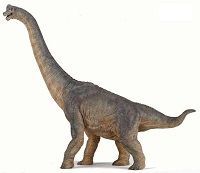

Distinguished by a remarkably long neck and supported by a tremendously powerful backbone, the Brachiosaurus is often compared to the giraffe largely due to its asymmetrical body design: the front legs are longer than the back, creating a sloping effect that makes the creature look even bigger than its already gargantuan height. The front feet each feature a single claw, while the hind feet each have three. While perhaps intended as defensive measures - as if a healthy Brachiosaurus needed to worry about predators - the claws have proven to fulfill the more curious purpose of gathering food. CLICK ON THE PICTURE FOR MORE INFORMATION.
